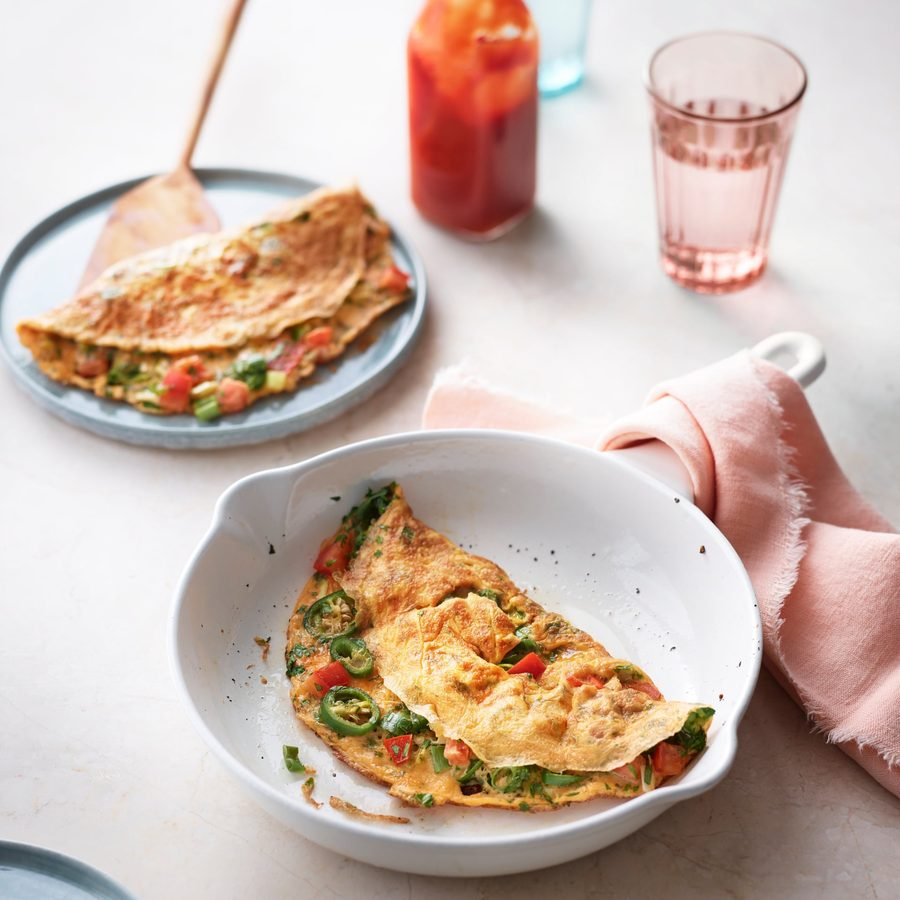

Masala omelette

A quick and easy meal, this dish requires minimum preparation and can be served with paratha or even toast. If you are cooking for one, still make two omelettes – one to enjoy straight away and the second to make into a sandwich the next day. Call me old-fashioned, but I strongly believe a masala omelette sandwich must be made with white bread and salted butter. Tomato ketchup is equally important.
For an omelette sandwich
In a bowl, beat the eggs. If you prefer not to eat the green chillies, chop them into pieces large enough to see so that you can remove them later. If you enjoy eating chillies, finely chop them. Add the chopped chillies to the beaten eggs in the bowl along with all the other ingredients, except the butter or oil.
In a small non-stick frying pan, heat 1 tablespoon of the butter or oil over a medium heat.
Add half the egg mixture to the pan and leave to “set” before gently folding the omelette over to cook through.
Slide the omelette from the pan on to a plate and keep warm. Repeat for the second omelette.
To make the omelette sandwich, butter 2 slices of white bread with a generous amount of salted butter. Place the folded omelette on top of 1 slice of buttered bread. Squeeze a generous amount of tomato ketchup over the omelette filling before covering with the second slice of buttered bread.